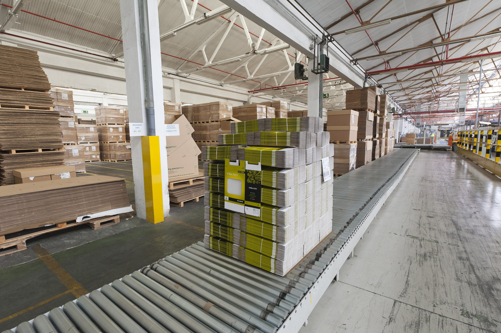

Lesson 6 · 55 minutes · CAP (A2) et bac pro (B1)
Lesson 6. There's a problem


Version adaptée dys de la Lesson 6.
Amorce (5 min)
Pour les élèves
Look at the painting, and look at the cardboard boxes. Imagine there is a problem with an order. What happened? Use the past simple, and start with I think.... Tell your partner in two sentences, for example: I think a box arrived damaged. The customer was not happy.
Activité 1. Listen: a problem in the workshop (14 min). Compréhension de l'oral.
Script enseignant
Léa: Excuse me, Mr Baker. I'm afraid there's a problem.
Tutor: What's the matter, Léa?
Léa: This cardboard box arrived this morning, and it's damaged. I opened it and two parts were broken.
Tutor: I see. Did you check the order number?
Léa: Yes, I did. It's order 4821, for Mr Harris. I called him a few minutes ago. He is a customer, and he needs the parts today.
Tutor: All right. Don't worry. We can replace the parts. Did you tell Karim?
Léa: Yes, I told him. He went to the stockroom and he found two new parts.
Tutor: That's good. Please pack them in a new box, and apologise to Mr Harris. Tell him we're sorry, and that we can deliver this afternoon.
Léa: Thank you. I'll do that now.
Tutor: And Léa: next time, tell me immediately, before you call the customer. You did well, but I have to know first.
Pour les élèves, questions (A2 : 1 à 6. B1 : toutes)
You will hear a conversation between Léa and her tutor, Mr Baker. Listen twice and answer.
- What is the problem?
- When did the box arrive?
- What is the order number?
- Who is Mr Harris?
- What did Karim do?
- What can they do to solve the problem?
- (B1) What did Léa do before she spoke to Mr Baker?
- (B1) What should she do next time, and why?
Corrigé
- A cardboard box is damaged / arrived damaged, and two parts were broken.
- This morning.
- 4821.
- He is a customer. He needs the parts today.
- He went to the stockroom and found two new parts.
- They can replace the parts, pack them in a new box, and deliver this afternoon. They will also apologise to Mr Harris.
- She opened the box, she checked the order number, and she called Mr Harris.
- She should tell the tutor immediately, before she calls the customer, because the tutor has to know first.
Activité 2. Past simple and useful phrases (10 min).
Pour les élèves
Expanding your vocabulary: problems and solutions
- There's a problem. / I'm afraid there's a problem. / What's the matter?
- The box arrived damaged. / Two parts were broken. / The machine stopped. / The order was late. / A customer was unhappy.
- I'm sorry. / I'm sorry about that. / I apologise. / We're sorry for the delay.
- We can replace it. / We can repair it. / We can deliver it this afternoon.
- I'll check with my tutor. / I'll call the customer. / I'll do that now.
Grammar in context: past simple
To report a problem, we say what happened:
- The box arrived damaged. (regular: arrive, arrived)
- I opened it. I checked the number. I called the customer.
- Two parts were broken. Karim went to the stockroom. He found two new parts.
- I told my tutor. He said we could replace them.
Questions and negatives:
- What happened? / What did you do? / Did you check the order? Yes, I did. / No, I didn't.
- I didn't use the damaged box.
Exercise. Put the verbs in the past simple.
- The box _______________ this morning. (arrive)
- I _______________ it and I _______________ a problem. (open / find)
- Two parts _______________ broken. (be)
- Karim _______________ to the stockroom. (go)
- We _______________ the parts and we _______________ to the customer. (replace / apologise)
- _______________ you _______________ the tutor immediately? (tell)
Corrigé
- arrived
- opened / found
- were
- went
- replaced / apologised
- Did / tell
Activité 3. Report, apologise, propose a solution (14 min). Interaction orale.
Pour les élèves
Dialogue 4. With the tutor
Student: Excuse me, Ms Clark. I'm afraid there's a problem. Tutor: What's the matter? Student: I checked the machine this morning and it stopped. I switched it off immediately. Tutor: Did you tell anyone? Student: I told Karim. He came and he looked at it. I think a part is broken. Tutor: All right. You did the right thing. I'll come and see. Don't switch it on. Student: Thank you.
Dialogue 5. With a customer
Customer: Good afternoon. I have a problem with my order. Student: Good afternoon. I'm sorry to hear that. How can I help you? Customer: The box arrived damaged, and two parts were broken. Student: I'm sorry about that. Could you give me the order number, please? Customer: Yes, it's 4821. Student: Thank you. We can replace the parts today, and we can deliver this afternoon. Customer: That's fine. Thank you. Student: You're welcome. I'm sorry again for the problem.
Your task. In pairs, choose one of the two dialogues. Read it twice and change roles. Then invent a new problem from your trade (a late delivery, a wrong dish, a leak, a broken tool, a wrong size). Write 6 to 8 lines: report the problem in the past simple, apologise, and propose a solution. Act it out.
Corrigé
Exemple restauration :
Customer: Good afternoon. I have a problem with my order. Student: I'm sorry to hear that. How can I help you? Customer: I ordered a vegetable dish, but there is an allergen I can't eat. Student: I'm very sorry. I checked the ticket and I made a mistake. We can prepare a new dish for you now, without that ingredient. Customer: Thank you. Student: You're welcome. I'm sorry again.
Exemple bâtiment :
Student: Excuse me, Mr Baker. I'm afraid there's a problem. Tutor: What's the matter? Student: The delivery arrived late this morning, and one box was damaged. I told the site supervisor and I put the box aside. Tutor: Good. We can call the supplier and ask for a new delivery. Don't use the damaged materials.
Activité 4. Write a short incident note (8 min). Expression écrite.
Pour les élèves
Write a short incident note to your tutor, in English.
A2 (60 to 80 words). Use this frame: This morning, there was a problem. The... I... Then I... We can... I'm sorry about...
B1 (90 to 110 words). Write a complete note: what happened, when, what you did, who you told, what solution you propose, and one sentence to show you know what to do next time.
Do not invent a long story. Keep it professional and clear.
Corrigé
Exemple A2 :
This morning, there was a problem. The cardboard box for order 4821 arrived damaged. I opened it and two parts were broken. Then I told my tutor, Mr Baker, and I told Karim. Karim found two new parts in the stockroom. We can pack them in a new box and deliver this afternoon. I'm sorry about the problem.
Exemple B1 :
This morning, a cardboard box for order 4821, for Mr Harris, arrived damaged. I opened it, I checked the number, and I found that two parts were broken. I told Karim, who went to the stockroom and found two new parts. I also called the customer, and then I spoke to my tutor, Mr Baker. We can replace the parts and deliver them this afternoon. I'm sorry about this problem. Next time, I will tell my tutor immediately, before I call the customer.
Trace écrite et travail à la maison (4 min).
Pour les élèves. Trace pour le cahier
Reporting a problem
- I'm afraid there's a problem. / What's the matter?
- The box arrived damaged. I checked it. I told my tutor.
- I'm sorry about that. / I apologise.
- We can replace it today. / I'll check with my tutor.
- What happened? What did you do? Did you tell the tutor? Yes, I did.
Pour les élèves
Homework, Lesson 6
- Write the past simple of these verbs: arrive, open, check, tell, go, find, be, have, break, come, say, replace, happen, leave, do.
- Complete the dialogue. Customer: I have a _______________ with my order. You: I'm _______________ to hear that. How can I _______________ you? Customer: The box _______________ damaged. You: I'm sorry about that. We can _______________ it today.
- Write your own incident note (A2: 60 to 80 words, B1: 90 to 110 words) about a problem from your PFMP, real or imagined. Use the past simple, an apology, and a solution.
Corrigé
- arrived, opened, checked, told, went, found, was/were, had, broke, came, said, replaced, happened, left, did
- problem / sorry / help / arrived / replace (or repair, deliver, exchange, according to a just choice)
- (Production personnelle. Le corrigé suit le modèle de l'activité 4 : faits au past simple, excuse, solution, ton professionnel.)